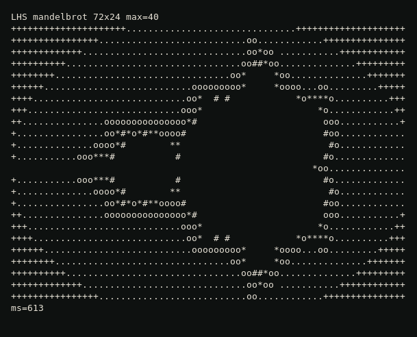

One language
LHS
Write the program once. Keep it easy to read. Still ship a real native program.
That is the two-language problem: an easy language for the first draft, then the same program again in a fast one. LHS is a small try at doing both in one file.
What it does today
- Sources are
.lhsfiles. The compiler islhsc. - Check, run, watch, test, and build a standalone program.
- Tasks you can wait on, structs and methods, and file I/O.
- A small standard library, including math, JSON, HTTP, and SQLite.
It is an early version you can read and run. It does not replace Python, C, or Rust.
A short program
use math
fn main() {
let a = task { square(6) }
let b = task { clamp(10, 0, 5) }
print(await a)
print(await b)
}
On your machine
Clone the repo, then check the examples and run one.
cargo run -p npc --bin lhsc -- test examples cargo run -p npc --bin lhsc -- run --jit examples/17_use_math.lhs
Drawn by LHS
The Mandelbrot picture below was drawn by an LHS program.

Have an idea for the language? Suggest an improvement.